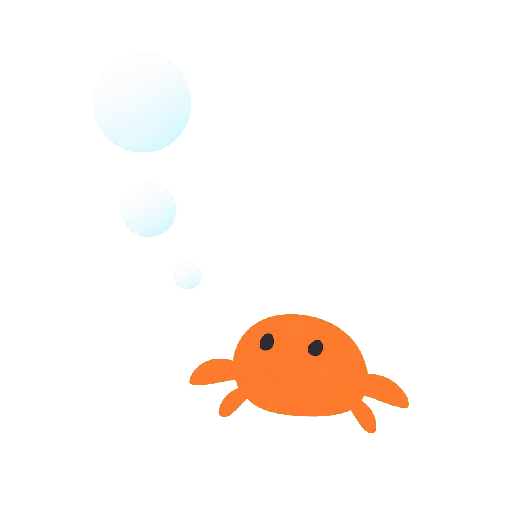
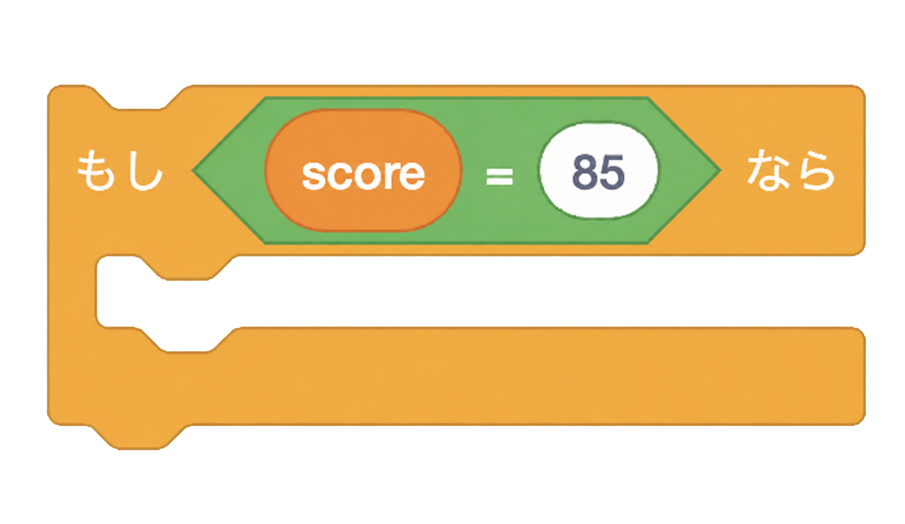

ブロックと同じ
Scratchを見ながら、そのままコードにできます。
Scratchで知っているブロックを、そのままコードにしてみよう。Clambonなら、はじめての文字でのプログラミングも安心です。

FROM BLOCKS TO TEXT
Scratchに近いことばや形のまま、キーボードでコードを書いて、すぐに動かせます。遊びながら、自然にテキスト言語のプログラミング力が身につきます。
いつものブロックの考え方からスタート。
近いことばを使って、コードを動かしてみよう。
読む・書く・直す力が、少しずつ身につきます。
ONE BLOCK, ONE CODE
むずかしいルールを、はじめから覚えなくても大丈夫。Scratchのブロックを見ながら、同じ意味のコードを書けます。

もし <score == 85> {
}WHAT YOU CAN DO
Scratchを見ながら、そのままコードにできます。
書いたらボタンを押すだけ。結果もすぐ見られます。
ゲームや日本語など、できることを増やせます。
QUICK DOCUMENTS
最初のプログラムは、たった3ステップ。間違えても何度でも試せます。
左のらんに、コードを書いてみよう。
右上の ▶ ボタンを押してみよう。
うまくいかなくても大丈夫。直して何度でもためせます。
OFFICIAL EXTENSIONS
やりたいことに合わせてClambonを育てよう。
キャラクターを動かして、遊べるゲームを作れます。
import ClagePlaygroundで試す →Clambonのコードを、日本語で書けます。
import JapaClaPlaygroundで試す →Clambonのコードを、カタカナで書けます。
import KataClaPlaygroundで試す →READY?
ブロックの見本を見ながら、自分のペースで何度でもためせます。
学習モードではじめる →